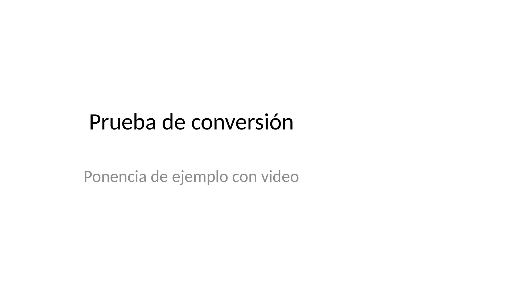
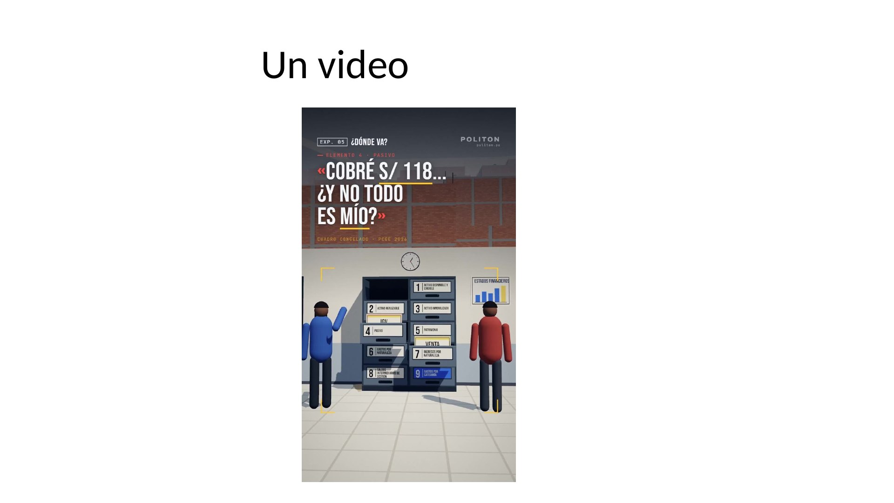
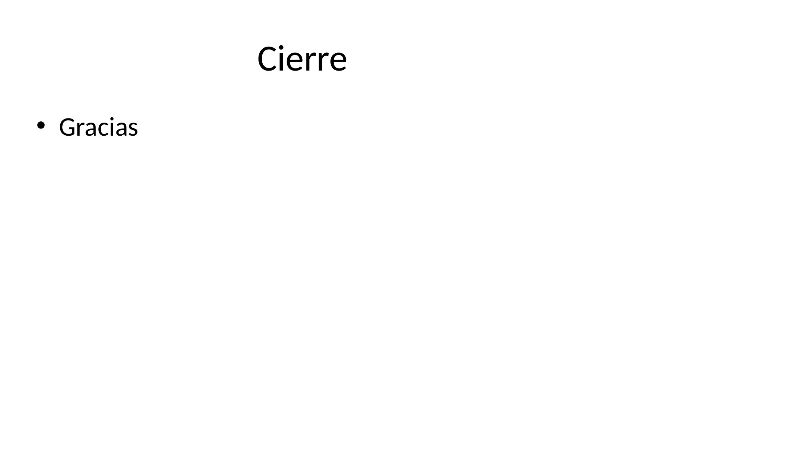

Prueba de conversión — José Manuel Guzmán Valverde

Prueba de conversión · Ponencia de ejemplo con video

Un video

Cierre · Gracias
Ponencias
Anterior
1 / 3
Siguiente
Pantalla completa
Presentador
PDF
Sin conexión
Atajos
Atajos y puntero
Siguiente
→
AvPág
Espacio
o el botón de avanzar del puntero
Anterior
←
RePág
o el botón de retroceder del puntero
Videos
1.er clic: el video se abre en grande · 2.º clic: vuelve a la diapositiva · 3.er clic: avanza.
K
pausa o reanuda.
Pantalla completa
F
o
F5
· salir con
Esc
Pantalla negra
B
o
.
Presentador
S
abre una ventana con notas, siguiente diapositiva y cronómetro
Ir a una
número +
Enter
Probar mi puntero
Cerrar